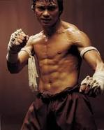

Tony Jaa
 De: La Frikipedia, la enciclopedia extremadamente seria.
De: La Frikipedia, la enciclopedia extremadamente seria.
| De la serie héroes del mundo:
|
| Tony Jaa
|
|
|
| Alias
|
"El Carajo de Indochina"
|
| Superpoderes
|
Inmatabilidad
|
| Novia
|
Lleva una relación de menage a trois con la Verdad y la Justicia
|
| Enemigos
|
El mal, las mafias del mundo
|
| Ciudad donde actúa
|
Noum Pradú
|
| Carácter:
|
Vengativo, casto, púdico y patriota
|
| ¿Es malo o bueno?
|
Bueno
|
| Vestimenta
|
La misma que Mowgli
|
| Grupo al que pertenece
|
Federación de dislocación de articulaciones
|
| Antecedentes
|
Mucha gente muerta
|
| ¿Natural o artificial?:
|
Natural
|
| Secuelas
|
Depende de donde te dé. Normalmente la muerte
|
| Juegos que protagoniza
|
Cocodrilo sacamuelas
|
«En sus películas, Tony Jaa hace gala de un marcado carácter nacionalista exhibiendo vistosos golpes de codo y rodilla que en la vida real nunca ejecutaría debido al riesgo al que se expondría en caso de atreverse a llevarlos a cabo, pues quedaría practicamente indefenso a golpes rápidos y directos.»
~ Fimosio Fernández (Catedrático de sociología de la Universidad Complutense) Justo antes de ser linchado por un grupo de fans de Tony Jaa que no tenían ganas de escuchar chorradas
Tony Jaa (พนม ยีรัมย์ Phanom Yeerum en su país, famoso por su exquisito turismo sexual), es un artista marcial, poeta, gimnasta, activista pro-derechos de los elefantes, intelectual, astrólogo, astrónomo y religioso tailandés. Ha sido nombrado "Hombre más sexy del mundo" por la revista SuperPop, a las mujeres de todo el mundo se les hace el chocho gaseosa solamente con mirarlo (de hecho ha sido nombrado el hombre mas chochogasificante de la historia por la revista National Geographic). Ha sido galardonado con un premio nobel de la paz por su compromiso con los derechos de los elefantes y las estatuas de Buda.
Vida y obra

Tony Jaa nació en Budapest, Thailandia, tras 33 meses de embarazo, y en los siguientes dos años de vida llegó a dominar más de 2396 artes marciales (aikido, pogo americano, muay thai, taekwondo, karate....) y varios estilos de baile (cumbia, moonwalker,el baile del pañuelo y el single ladies). Estudió en el colegio Hogwarts de magia y hechicería (el de thailandia) donde siempre destacó por sus altas calificaciones en defensa contra las artes oscuras. Cuando se graduó decidió convertirse en el mejor actor de todos los tiempos y protagonizó cuatro obras maestras del séptimo arte: Ong Bak, Ong Bak 2 (que no tiene nada que ver con Ong Bak), Ong Bak 3 y Thai Dragon (nombrada "mejor película de la historia"). Thai dragon fue ganadora de 23 oscars, entre los que destacan: Oscar a la mejor película, Oscar al mejor actor, Oscar al mejor director, Oscar a la mejor luxación y Oscar al mejor argumento. Cuando estallaron las revueltas en Thailandia en el año 2010 Tony Jaa decidió encerrarse en un monasterio budista porque temía que alguno de los bandos envueltos en la trifulca lo convenciera para apoyar su causa y lo utilizara como un arma de destrucción masiva. En la actualidad permanece en ese monasterio pensando en que es lo que tendrá que recuperar en su próxima película.
Tener más peligro que Tony Jaa....
- Tiene más peligro que Tony Jaa en una convención de comerciantes de marfil
- Tiene más peligro que Tony Jaa ejerciendo fisioterapia
- Tiene más peligro que Tony Jaa en una regata
- Tiene más peligro que Tony Jaa en una parada de taxis de bangkok
- Tiene más peligro que Tony Jaa en una gasolinera de la frontera de Tailandia
- Tiene más peligro que Tony Jaa en una clínica de rehabilitación de paralíticos
- Tiene más peligro que Tony Jaa en un concurso de gigantes
- Tiene más peligro que Tony Jaa en el incendio de una academia de capoeira
- Tiene más peligro que Tony Jaa en un cementerio de elefantes
- Tiene más peligro que Tony Jaa en Mira Quien Baila
- Tiene más peligro que Tony Jaa en un prostíbulo Thailandés
- Tiene más peligro que Tony Jaa en una cristalería de bohemia
- Tiene más peligro que Tony Jaa en un campeonato de skate
- Tiene más peligro que Tony Jaa en un almacén de fluorescentes
- Tiene más peligro que Tony Jaa en una marathón
- Tiene más peligro que Tony Jaa subiendo unas escaleras
¿Sabías que...
- ....Tony Jaa es tan duro que es lo único capaz de rayar el diamante?
- ....Tony Jaa tiene más peligro que Kirk Hammett con un balón?
- ....Tony Jaa es hijo de Buda y hermano de James Hetfield?
- ....Los tailandeses son gente de paz?
- ....Tengo mucho tiempo libre?
- ....El mundo está dominado por el Club Bilderberg?
- ....Tony Jaa es el presidente del club Bildelberg?
- ....Tony Jaa puede hacerse una mamada a sí mismo mientras derrota a un ejército de espartanos?
- ....Tony Jaa es el guerrero más letal?
- ....Cuando los boinas verdes no se atreven a entrar en un sitio llaman a Tony Jaa?
- ....Estoy soltero y abierto a nuevas experiencias?
Filmografía
- Ong-Bak: Tony Jaa encarna a ting, un joven fanático religioso tailandés. Unos desalmados mafiosos roban la cabeza del Buda de su pueblo que se sume en la desesperación y en la pobreza. Ting viaja a Bangkok para recuperarlo. Frase: ¿Dónde está la cabeza de Ong Bak?
- Thai Dragon: Tony Jaa encarna a kham, Un joven tailandés criador de elefantes, al que le roban sus dos elefantes. Kham viaja a Australia para recuperarlos. Frase: ¿Dónde están mis elefantes?
- Ong-Bak 2: A Tony Jaa le roban su virginidad. Construye una máquina del tiempo con un Delorian y viaja a la Edad Media tailandesa para recuperarla. Frase: ¿Donde está mi virginidad?
- Ong-Bak 3: A Tony Jaa le roban su buen gusto musical y empieza a escuchar bakalao y techno. Para recuperar su buen gusto decide ir a un concierto de Metallica. Mientras tocan creeping death comienza un pogo descomunal y, creyendo que lo atacaban, Tony Jaa disloca una extremidad a cada uno de los 55000 asistentes al concierto utilizando 55000 llaves distintas. Es la película más violenta de Tony Jaa pero encierra una audaz crítica a la sociedad tailandesa del siglo XVIII. Frase: ¡¡Tocad Battery!!!!
Proyectos futuros
- Thaitanic: Tony Jaa encarnará a un luchador de Muay Thai y crítico gastronómico que viajaba en el Titanic.
- Thais Tontos: Tony Jaa encarnará a un redactor de la Inciclopedia.
- Thaiphlosion: Tony Jaa encarnará al Pokemón Typhlosion de las ediciones Oro y Plata.
- Thaiaaghh: Tony Jaa encarnará Jony Taa,un joven thailandés que sueña con ser actor. Algunas escenas en exclusiva: http://www.youtube.com/watch?v=uxkr4wS7XqY&feature=related
Autor(es):
- Gñapero Solitario
- Dancob
- Albertortilla
- Kusarigamanspain
- Feanor saquet
Frikipedia 2005-2016, Licencia
GFDL 1.2 - Extraído por FrikiLeaks